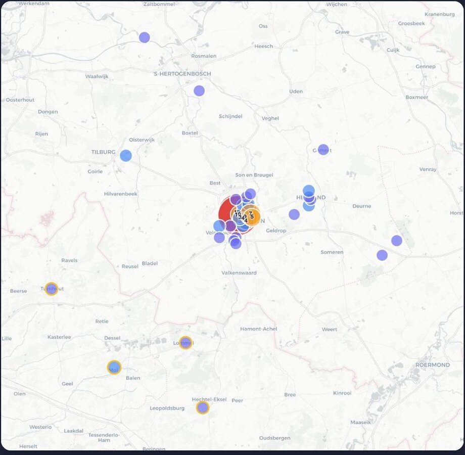

Een groeiende tandartspraktijk had een centrale plek nodig voor de volledige patiënt-instroom. Wij bouwden een custom CRM-portal die met de praktijk meegroeit — de spreadsheet ging de deur uit.

Een spreadsheet is prima om mee te starten — tot je groeit. Data raakte kwijt, versies conflicteerden en niemand had nog overzicht over waar een patiënt in het proces zat.
VLIJT had een systeem nodig dat de instroom structureerde, inzicht gaf per marketingkanaal en automatisch synchroniseerde met de website — zonder logge, dure SaaS-tooling.
Drag & drop door 5 fases, van nieuwe aanmelding tot ingepland.
Real-time conversie en instroom per marketingbron.
Herkomst van patiënten gevisualiseerd op postcode.
Aanmeldingen komen automatisch binnen vanaf de site.
Vertel ons je uitdaging. We denken graag met je mee, vrijblijvend.